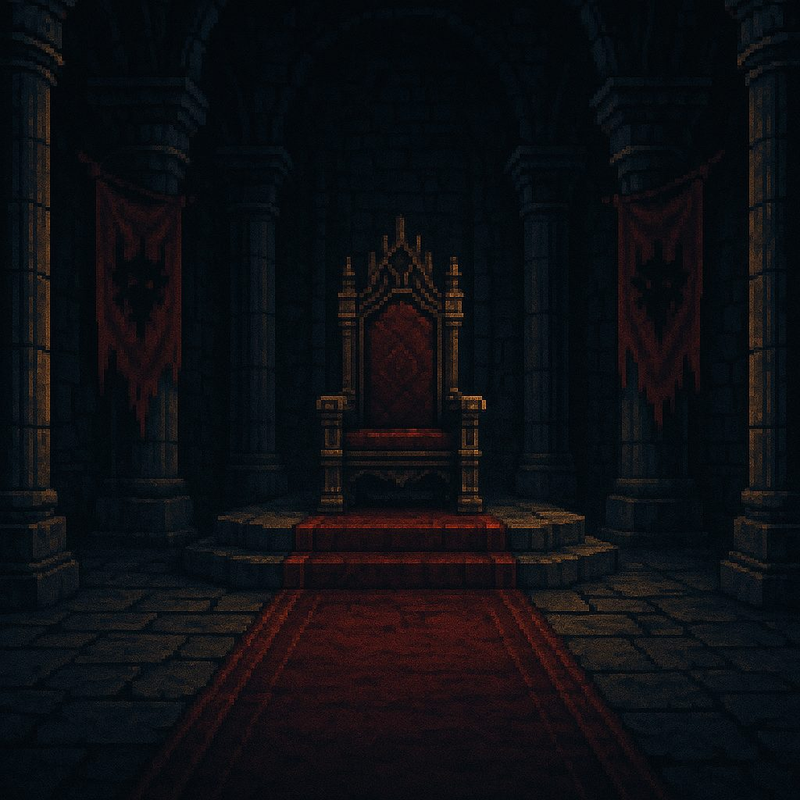
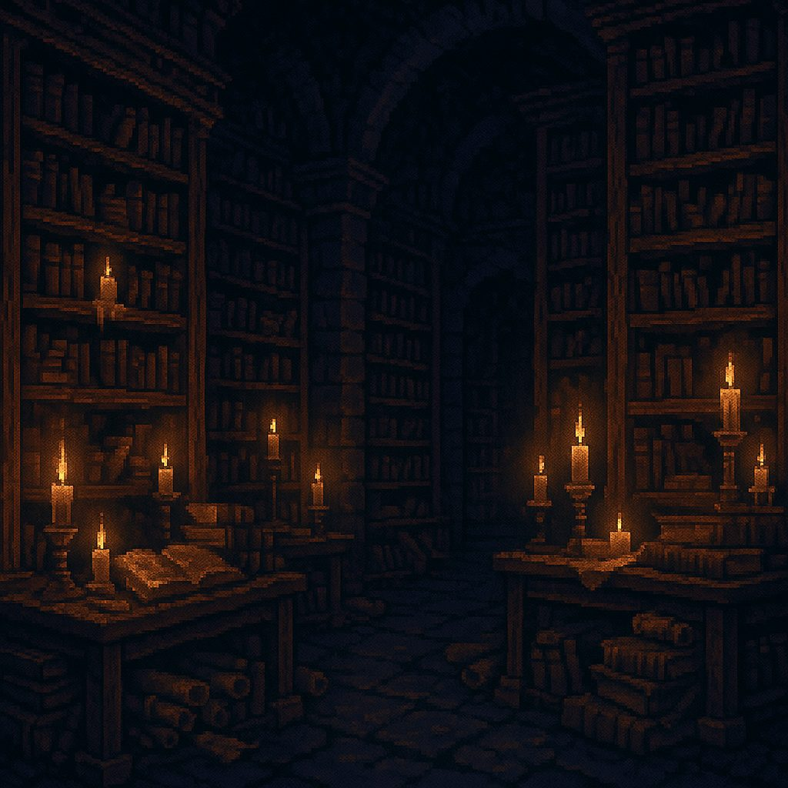
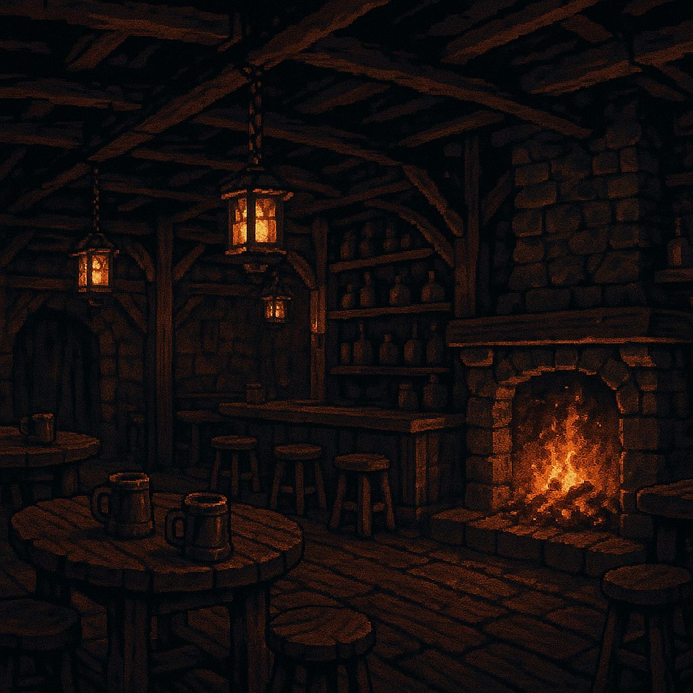
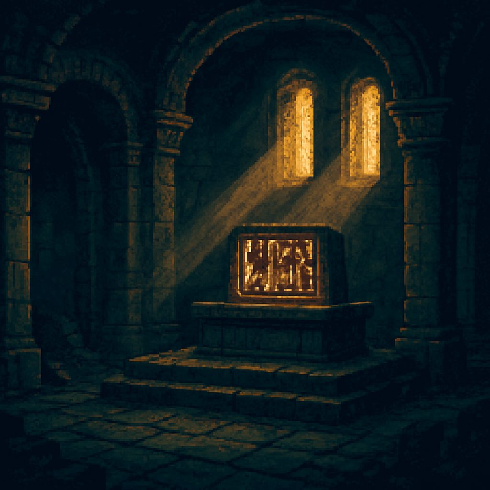
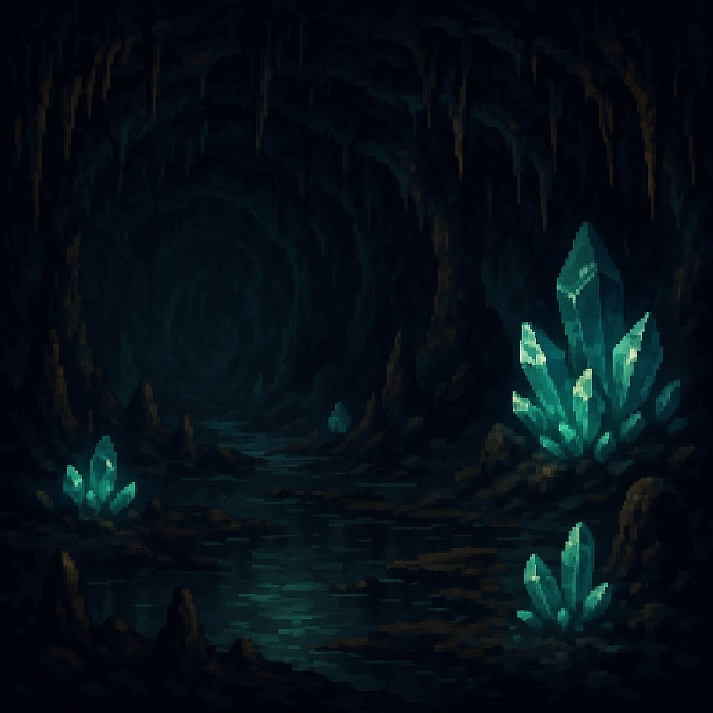
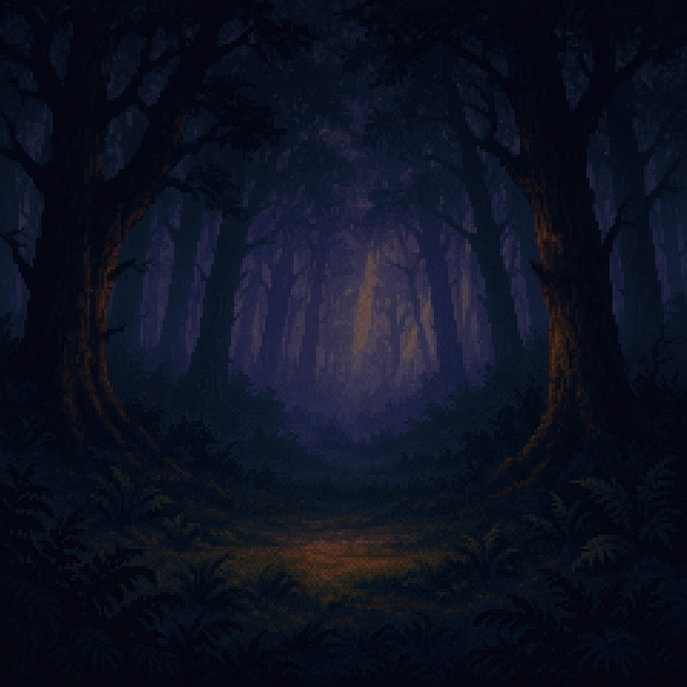
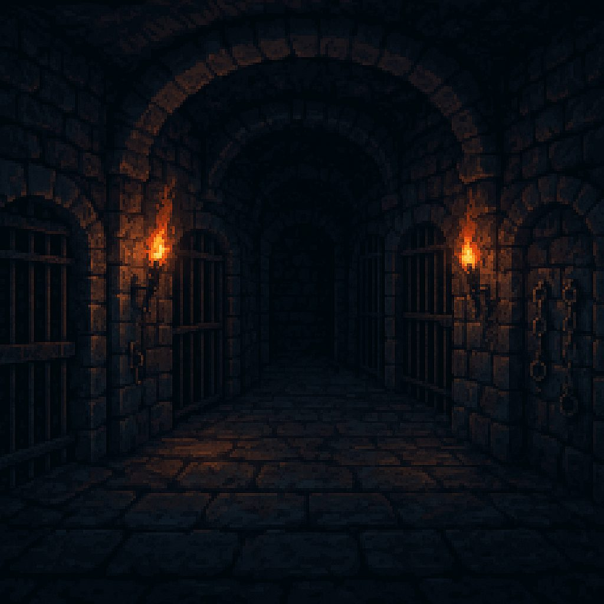

Generated via OpenAI Images API at 1024×1024, pixel-art style, dark-fantasy palette.
Six shown; all sixteen are cataloged in public/demo-assets/assets.json.







Seven sub-agents ran concurrently. Each owned one feature end-to-end, including its own build verification.
TownScreen.js:24-83,252-368,700-716,1311-1375src/game/passives.js with 20 class trees × 5 nodes × 3 ranks, folded into CombatScreen stats (crit%, HP/MP regen, attribute bonuses), LevelUpScreen grant UI, SkillTreeScreen Passive tab, SaveManager migration.forest_enter, seer_hut, ash_gate) converted to 3-choice branches with real outcome variance.skills.js:721-1595HireBuilderScreen.js:13-33,93-100,116-127,150-167InventoryScreen.js:124-125InventoryScreen.js:258-268LevelUpScreen.js:67-79,317-323CombatScreen.js:1432root param → manager.uiOverlay); CombatScreen view-log l.text → l.msg with fallback; TownScreen duplicate-hire (templateId tracking because hires gain _timestamp id suffix); TitleScreen logo radial glow removed; OpeningCinematic per-line font classes (epic/whisper/title/warning/narration); DialogScreen reward items colored by RARITY_COLORS[item.rarity].@media (min-width: 768px) #ui-overlay { font-size: 14px }.#ui-overlay root only — nested absolute 0.6–0.7rem declarations still render small.ScreenManager.push.deriveCharacterStats(member) helper — passive, equipment, and melee/spell formulas are duplicated across 4 screens.